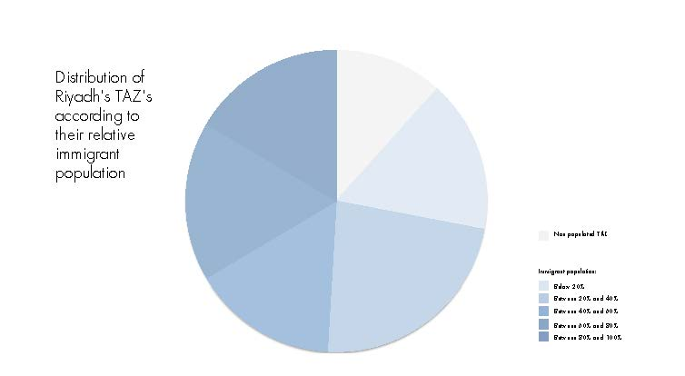
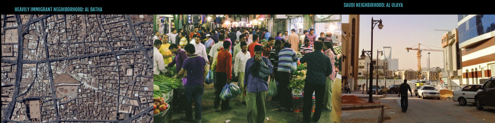
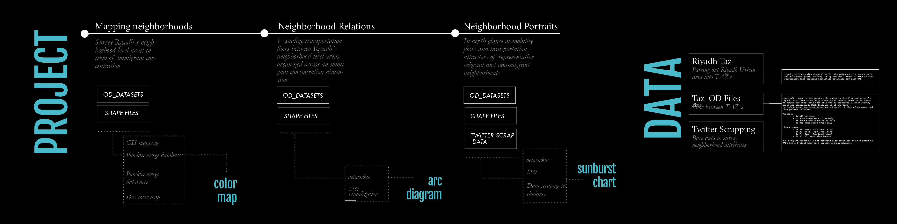
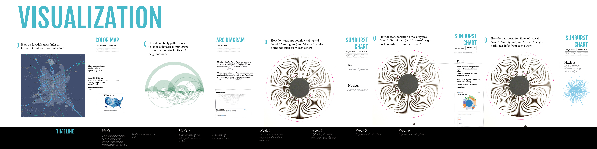
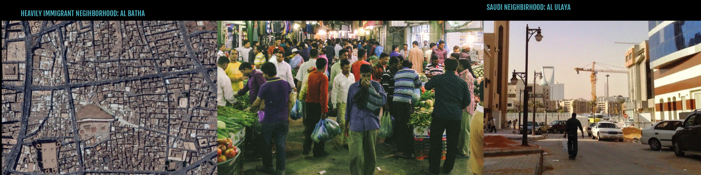
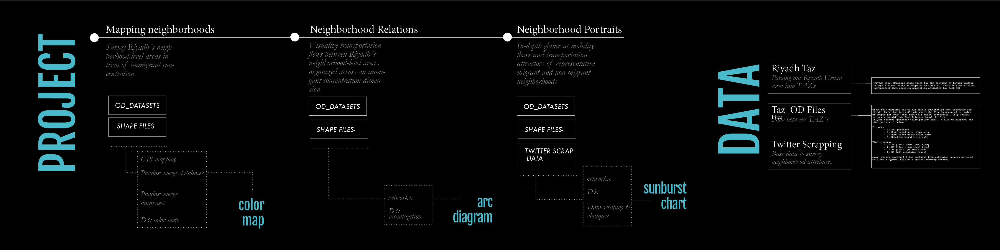
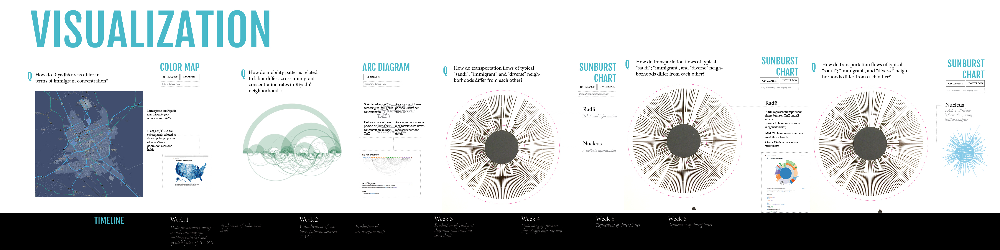

This website is to display Sergio and Wayne's project on visualizing Riyadh's transpostation patterns based on TAZs.
In the next few weeks, as we develop our project, we will construct an interactive map of the city of Riyadh to show how the transportation patterns in the TAZs differ. In particular, we will explore the behavior patterns of the immigrant workers in Riyadh.
Below are our presentation slides for our initial concepts.
 




